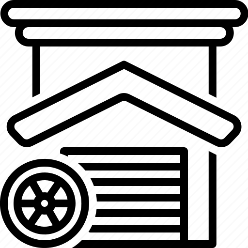

Vous êtes plutôt style baroudeur, en cuir et grosses godasses ? Ou plutôt style années 80, avec santiags et bandana ? Ne nous mentons pas. Chaque motard a déjà passé des heures devant la glace en se demandant comment il allait s’habiller. Veste hiver ou été ? Quel pantalon avec ? Bottes ou chaussures ? Le style sur la moto, d’accord, mais une fois le casque et les gants retirés, quel look privilégier ?
Si vous êtes motard, vous savez que le look passe après la sécurité. Mais quand même ! On peut être prévoyant et coquet ! Oui, être motard, cela coûte cher. Le permis d’abord, puis l’équipement, la moto, les frais administratifs et d’entretien, le carburant. Vous allez devoir prévoir un budget conséquent pour tout ça ! D’ autant que sur certains points, il ne faudra pas lésiner sur le budget. C’est le cas de l’équipement. Mais ce qu’il y a de bien avec l’équipement, c’est qu’il représente un poste qui peut être rapidement amorti ! Si l’on s’y prend bien et surtout… en avance.